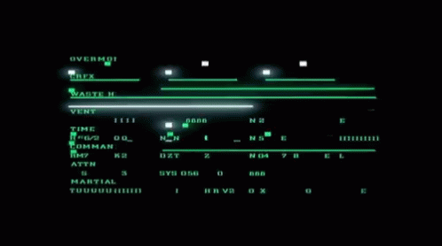
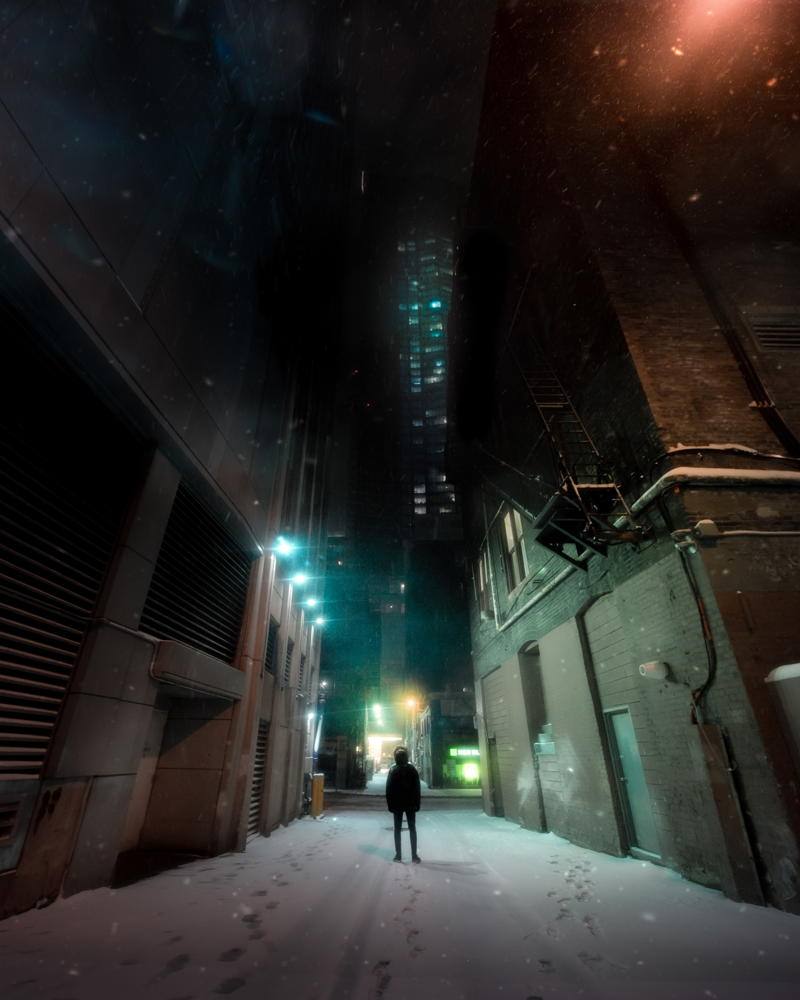
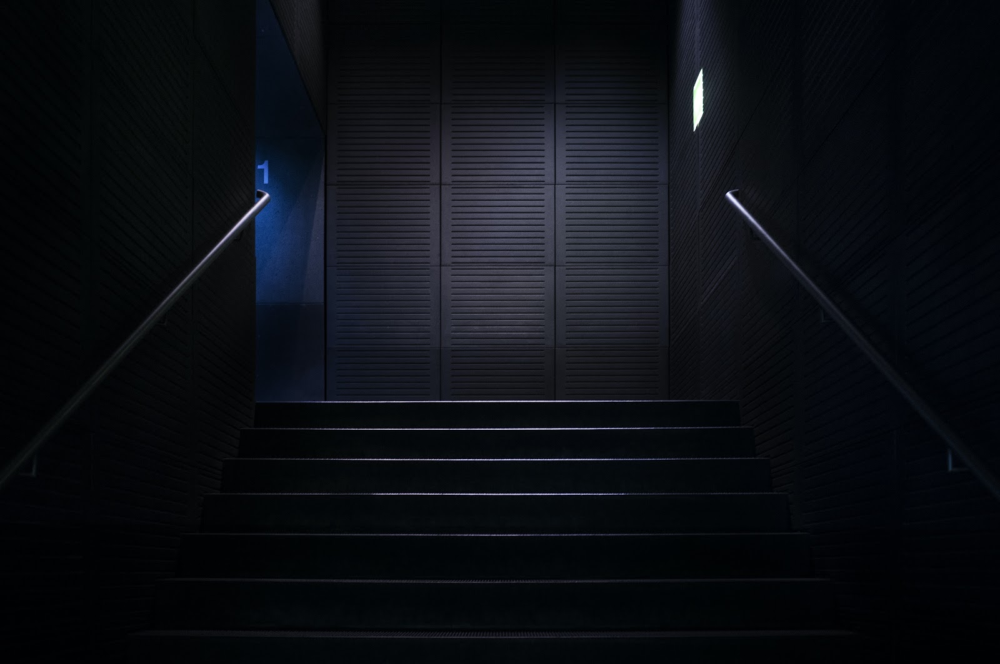
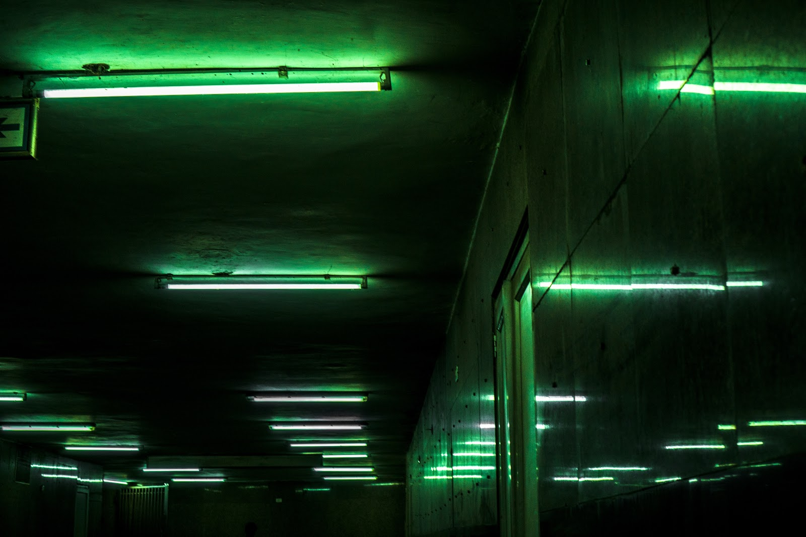
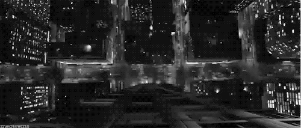

THE MATRIX describes a world in which reality is constructed as opposed to existing with the status of “given” and furthers a narrative that reality’s existence, itself, is and should be up for debate. Entertaining this idea, we might
be able to analogize reality with dreams. One may wake up from a dream, but they would find that they only wake to another dream.
Destabilizing reality in this way also destabilizes phenomena we believe to be givens of reality, such as time & space. What proof do we have that either of these entities exist, given the fact that they are drenched in paradox. Take Zeno’s
paradox. If Zeno’s paradox destabilizes distance, might it also destabilize time, as distance often swoops in to analogize time, since we have no other way of understanding but in terms of space?
At the collapse of time and space, the dream becomes the ultimate metaphor of reality; such a fitting metaphor it almost crosses the line that defines the dream and reality.
Therefore, if distance doesn’t exist, moving from one dream to another isn’t even possible. If we cannot move, then waking is impossible.

[01:39] No Wolves, Just Sheep Grazing on the Fabric We Call Home
And what of the self in this paradigm? We say that we experience reality. Is experience reality?
Well where does the dream come from? If reality comes from the mind, we move from the theory of THE MATRIX to the theory of INCEPTION, where reality is a projection of the consciousness of the dreamer.
As an aside, do these theories disqualify the existence and experience of others? My personal belief: no, and never. Existing in a society, existing with others means unequivocally granting the full and unconditional validity of experience to
everyone. To do otherwise is to guarantee the demise of a healthy society.
Coming back. Given the fact that all that we experience is filtered and produced from our memories, subconscious, and other psychological phenomena, we might conclude that the world is a mirror. The dream is an infinite reflection.

[06:43] THEATRE OF ANIMALS
This is a concept album about the United States after all… But we’ll hold off on that for now.
[10:12] The Sleep Factory
To the question of waking from the dream, we may continue traveling radially across rings of dreams, but you’ll never reach the edge, because moving itself is a fallacy. So, we live in an infinite metadream, one that does not grant real time
or real space, or real reality. If distance does not exist, then reality seems to crumble in on itself, only to be reproduced by our minds themselves; as the only correlative is our minds, themselves.
WHY DOES IT MATTER
Understanding that reality is constructed and not a given begs questions of why, how, and what.. To be infinitely curious is to guarantee one’s own psychological freedom, or does it? In one sense, reality has been created for us - it is a
given. The important thing to remember is that reality0 was not created by us - it was a matter of societal, familial, interpersonal creation. To question is to destabilize, and to theorize is to materialize reality.
CHRONOLOGY
[10:12]
The night was dark and the fog was heavy. Everything we have done has been leading up to this moment. The only beam of light there seemed to be was the neon blue skyscraper towering over us. we knew that, after tonight, there was no going
back. I hated it, but if I’m being honest, i thought it was kind of beautiful. I looked at Ryan and we both knew this would be it.
“Are you ready?,” Ryan said.
I nodded and we lit the fuse. All I could focus on after that was the chain link fence we were running towards, the dirt kicking up behind us, our bodies beating outside of ourselves. We scale the fence and then there it was. The loudest
sound I've ever heard. We hit the ground and as if perfectly orchestrated in concert, in that moment the computer tower exploded with glimmering pieces of servers and concrete, and date. We did it. We had liberated our people. Nothing that
could happen after this moment mattered, not even death.
And then there was blackness.

[12:07]
The underground gathered around their fallen friends. The green sodium lamps from above put a darker vampire black hue on the bodies. The world around began to shrink - blackness began to overtake the city. The city fractilized and the
funeral room grew smaller and bigger simultaneously.

[13:03]
I awoke to the sound of my alarm. It was quieter than usual. That was, until I saw the time. I was late for work. I rushed out the door and headed to work as fast as I could. As I drove through the city, I started to feel nauseous. I’d never
felt like this before.
I caught myself, “never?” I thought. And then it hit. My breakfast was all over the car. I called in sick and went back home.
[17:03]
I lay in bed and Everyday feels the same. Nothing is interesting to me anymore. I go to work, come home, watch tv and sleep. I just need sleep. Maybe I’ll just go to sleep.
I can feel the cold air across my face. I just need to wake up. The ground doesn’t seem so far from me anymore. I just need to wake up. There are sirens in the distance, and it begins to rain. What am I feeling. I’m so lost, but I don’t know
if I even feel anything anymore. What is real. Now I can feel the air pushing against my body, I can see the sidewalk coming for me, the people are approaching, and everything is growing larger. Just as I feel the immediacy of blackness,
everything bounces away into itself and I feel it all spinning around and behind me. I just need to wake up. I’m nauseous.

[18:14]
just be normal do your part is the calm before the storm
[20:25]
Subplot: how to organize a rebellion.
[28:14]
Maybe this is when the main character goes out and gives a speech (martyr scene)
[31:52]
this when the main character goes out at night and finds the warehouse filled with bodies
 OVER MY DEAD BODY
OVER MY DEAD BODY feed_me
feed_me Paralyzed
Paralyzed WHAT IS...?
WHAT IS...? GASLIGHT CORP.
GASLIGHT CORP. The Club
The Club The City
The City The Invisible Hand
The Invisible Hand